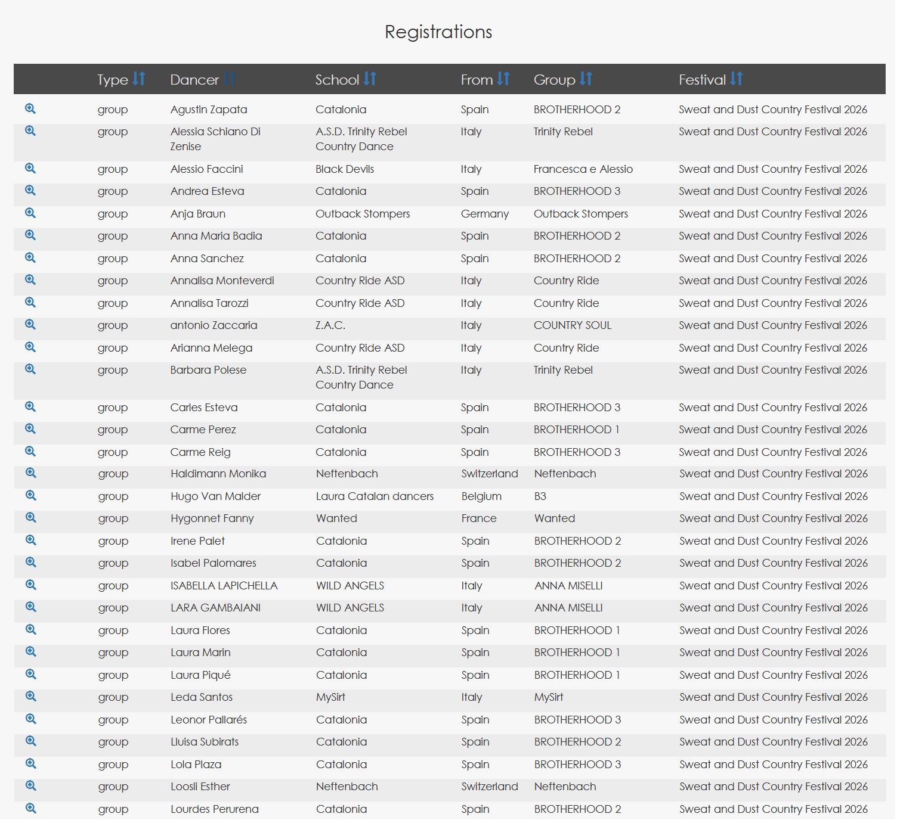
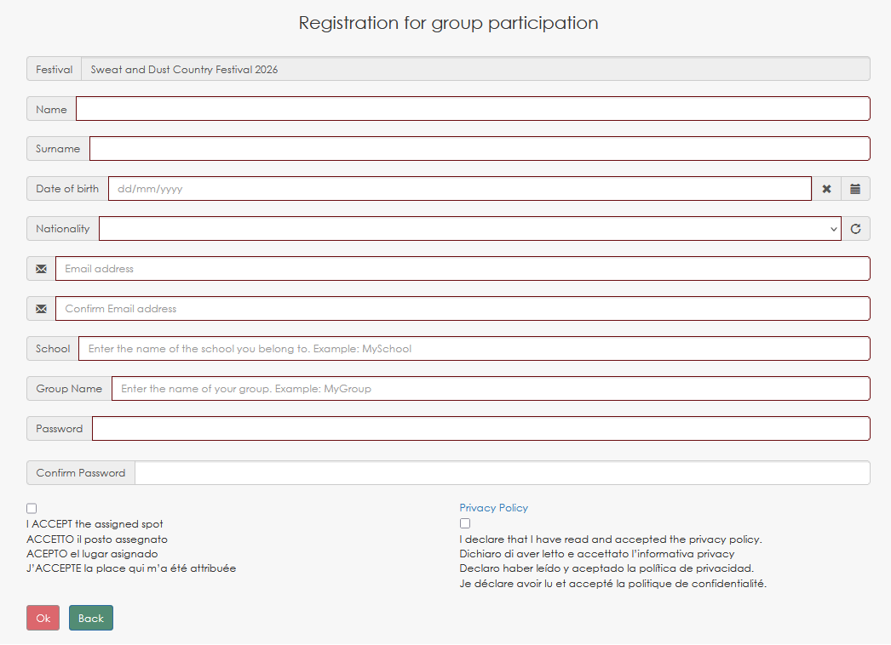

Country Dance Event Registrierungssystem — Operative Stabilität
Kontext
Operative Registrierungsumgebung für eine öffentliche Country-Dance-Veranstaltung, die Teilnehmer, Gruppenanmeldungen und administrative Workflows verwaltet mittels eines ausführbaren Domänenmodells, das aus demselben execution meta-model abgeleitet ist.
- Gruppenanmeldungen für Tanzteams
- Individuelle Teilnehmerregistrierung
- Strukturierte Datenvalidierung
- Administrative Prüf-Workflows
- Operatives Registrierungsmanagement während der Veranstaltungssaison

Operative Registrierungsliste mit Teilnehmern und Gruppen aus mehreren europäischen Ländern.
Operative Kennzahlen
Wachstum der Registrierungen über die Jahre:

Registrierungsformular, das aus dem ausführbaren Domänenmodell generiert wurde.
Operative Zuverlässigkeit
Das System wurde über mehrere jährliche Veranstaltungszyklen hinweg eingesetzt, unterstützte Registrierungsspitzen während der Eröffnungsphase und wurde kontinuierlich während der Saison genutzt.
- Keine strukturellen Fehler in der Anwendungslogik
- Seltene Ausfälle im Zusammenhang mit der Serverinfrastruktur
- Konsistente Datenintegrität über mehrere Editionen hinweg
- Stabiler Betrieb ohne Regeneration des Modells
Generative Evidenz
Quantitativer Vergleich zwischen DSL-Definition und generiertem Laufzeitsystem.
Das System wird aus dem DSL-Modell generiert, das das execution meta-model instanziiert, mit nur begrenzten manuellen Erweiterungen für UI-Anpassungen und operative Feinabstimmungen.
Architektonische Bedeutung
Dieses System zeigt:
- Operative Stabilität über mehrere Veranstaltungszyklen hinweg
- Skalierbarkeit bei steigenden Registrierungsvolumina
- Zuverlässigkeit unter realen saisonalen Bedingungen
- Plattformübergreifende Portabilität des generierten Systems
- Migration von Windows auf Linux ohne Änderungen an der Anwendung
Kernaussage
Nicht einmal bereitgestellt und ersetzt — sondern kontinuierlich über mehrere Zyklen hinweg betrieben, mit wachsender Teilnehmerzahl.